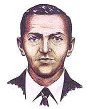

|
D.B. Cooper Situations with hostages, a hijacker, a plane and a bomb rarely come out very well, or without someone coming out damaged or dead. One exception is the story of D.B. Cooper, the middle-aged hijacker who decided one day to hold a plane hostage and got away with it.Skyjackings were somewhat commonplace by 1972, but almost all of them were, to put it bluntly, Palestinians. Political in nature, they often occurred to demand release of a prisoner or to protest some middle east situation. Not so for flight 305 from Portland to Seattle, where a man who called himself "Dan Cooper," who had purchased his flight with a $20 bill, passed a note to the stewardess asking for $200,000, four parachutes, and to keep things smooth. He was so calm about it that the stewardess initially pocketed the note, thinking it was just his phone number and that he was asking her out. Once she saw what the note said, she alerted the flight crew and confronted Cooper, who showed her the inside of his bag and what appeared to be a bomb (red cylinders, wires). While the plane circled over Seattle, the money and parachutes were assembled, and the FBI photocopied the money to check the serial numbers for later. The plane landed and the passengers disembarked, unaware that a hijacking was taking place. Cooper waited within the plane and the parachutes and money were brought on for him; it is thought that he asked for multiple parachutes to make the authorities figure he was going to bring someone off the plane with him, and they wouldn't risk sabotaging the chutes. He demanded the plane fly to Mexico, not climb over 10,000 feet, and stay at 170 miles an hour. He was told they would need to refuel in Reno, Nevada, and he agreed. As the plane started off on its way, he went to the rear of the 727, which was the only commercial airplane with a rear staircase. The pilot noticed the door ajar light come on, and contacted the rear area, asking Cooper if he needed any assistance. A single "No!" came from the radio, and that was the last anyone ever heard of Cooper; he had jumped off the plane, using the nylon ropes from one of the chutes to secure the money to his waist. Naturally, things were closing in on Cooper when he jumped; two F-106s were following the 727 and authorities were waiting for him in Reno. But Cooper had outsmarted them all, jumping into the night over Washington, into a Thanksgiving eve storm on a snowy mountain bank. The FBI search for Cooper lasted over a month and other lost bodies were found, but Cooper was not. A D.B. Cooper had been contacted to see if he had been the one, and "D.B. Cooper" became the name of the hijacker, even though he'd only ever called himself "Dan Cooper". Years passed with no break in the case. In 1980, a boy digging a fire pit in Vancouver, Washington found some of the money half-buried in the dirt and snow. The serial numbers matched those from D.B. Cooper's take, but the $5,800 found was a small portion of the $200,000 taken. Later in 1980, Mt. St. Helens erupted, burying any other potential evidence under a pile of ash. In the interim years, many people have come forth to declare themselves D.B. Cooper, but none have entirely panned out. Cooper's crime rates as the only unsolved domestic hijacking in U.S. History. Nobody was hurt, no passenger was made aware of the situation they were in, and he got away with it; you can't ask for more than that. Cooper's lasting legacy is the "Cooper Vane", a latching device that prevents an airline door from being opened while the plane is in the air. |